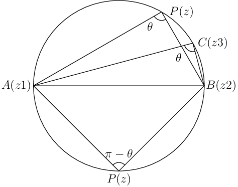

271. $ABCD$ is a rhombus. Its diagonals $AC$ and $BD$ intersect at a point $M$ and satisfy $BD = 2AC$. If the points $D$ and $M$ represent the complex numbers $1 + i$ and $2 - i$ respectively, then find the complex number represented by $A$.
Solution: Let $z$ represent $A$, then $\frac{z - (2 - i)} {1 + i - (2 - i)} = \frac{AM}{MD}e^{\frac{\pi i}{2}} \Rightarrow z = (2 - i) + \frac{i}{2}(-1 + 2i) \Rightarrow z = 1 - \frac{3}{2}i$ or $3 -\frac{i}{2}$.
272. If $z_1, z_2 , z_3$ and $z_4$ are the vertices of a square taken in anticlockwise order, prove that $z_3 = -iz_1 + (1 + i)z_2$ and $z_4 = (1 - i)z_1 + iz_2$.
Solution: $\frac{z_1 - z_2}{z_3 - z_2} = e^{\frac{i\pi}{2}} = i\Rightarrow z_3 = -iz_1 + z_2(1 + i)$. Similarly, $z_4$ can be found.
273. Let $z_1, z_2$ and $z_3$ are vertices of an equilateral triangle in the circle $|z| = 2$. If $z_1 = 1 + i\sqrt{3}$, then find $z_2$ and $z_3$.
Solution: $z_1 =2\left(\frac{1}{2} + \frac{\sqrt{3}}{2}i\right) = 2(\cos60^\circ + i\sin60^\circ)$. Therefore, $z_2 = 2(\cos180^\circ + i\sin180^\circ) = -2$ and $z_3 = 2(\cos300^\circ + i\sin300^\circ)$.
274. If $a$ and $b$ are real numbers between $0$ and $1$ such that points $z_1 = a + i, z_2 = 1 + bi$, and $z_3 = 0$ form an equilateral triangle, then find $a$ and $b$.
Solution: We know that three vertices represent an equilateral triangle if $z_1^2 + z_2^2 + z_3^2 - z_1z_2 - z_2z_3 -z_1z_3 = 0.$ Substituting the respective values, we get
$a^2 - 1 + 2ai + 1 - b^2 + 2bi - a + b - abi - i = 0 \Rightarrow a^2 - b^2 - a + b = 0 \Rightarrow (a - b)(a + b + 1) = 0$. So either $a = b$ or $a + b = -1$ but if we choose $a + b = -1$ then the other part leads us to $ab = 3$ which is not possible.
Choosing $a = b$, the imaginary part becomes $2a + 2b - ab - 1 = 0 \Rightarrow a = 2 \pm \sqrt{3}$. But $a = 2 + \sqrt{3}$ does not make triangle equilateral. So $a = b = 2 - \sqrt{3}$.
275. Let $ABCD$ be a square described in the anticlockwise sense in the argand plane. If $A$ represents $3 + 5i$ and the center of the square represents $\frac{7}{2} + \frac{5}{2}i$. Find the numbers represented by $B, C$ and $D$.
Solution: Let $O = z$ represent center of the sqsuare then $z = \frac{A + C}{2} \Rightarrow C = 4 + 0i = 4$. $AC = AB.\sqrt{2}.e^{\pi/4} \Rightarrow B = 1 + 2i$ and $AD = AB.e^{\pi/2} = 6 + 3i$.
276. Find the vertices of a regular polygon of $n$ sides, if its center is located at origin and one of its vertices is $z_1$.
Solution: Let $O$ be the origin and $A_1$ the vertex $z_1$. Let the vertex adjacent to $A_1$ be $A_2$. Then $z_2 = z_1e^{2\pi i/n}\;\because \angle A_1OA_2 = \frac{2\pi}{n}$.
Similarly, $z_3, z_4, \ldots, z_n$ are other vertices in order, then $z_3 = e^{4\pi i/n}, z_4 = e^{6\pi i/n}, \ldots$.
Thus, all vertices are given by $z_{r + 1} = z_1e^{2\pi ri/n} = z_1(\cos2r\pi/n + i\sin2r\pi/n), \ldots$, where $r = 1, 2, \ldots, n - 1$.
277. Prove that the points $a(\cos\alpha + i\sin\alpha), b(\cos\beta + i\sin\beta)$ and $c(\cos\gamma + i\sin\gamma)$ in the argand plane are collinear, if $bc\sin(\beta - \gamma) + ca\sin(\gamma - \alpha) + ab\sin(\alpha - \beta) = 0$.
Solution: $z_1, z_2, z_3$ are collinear if $\begin{vmatrix} z_1 & \overline{z_1}&1\\ z_2 & \overline{z_2}&1\\ z_3 & \overline{z_3}&1 \end{vmatrix}=0$. Substituting $a, b, c$ in this and expnading the determinant it is trivial to obtain the given condition.
278. $A$ represents the number $6i, B$ the number $3$ and $P$ the complex number $z$. If $P$ moves such that $PA:PB = 2:1,$ show that $z\overline{z} = (4 + 2i)z + (4 - 2i)\overline{z}$. Also, show that the locus of $P$ is a circle, find its radius and center.
Solution: $PA^2 = 4PB^2 \Rightarrow |z - 6i|^2 = 4|z - 3|^2 \Rightarrow x^2 + (y - 6)^2 = 4[(x - 3)^2 + y^2] \Rightarrow x^2 + y^2 - 8x + 4y = 0$, which represents a circle with center at $(4 -2)$ and radius $\sqrt{20}$.
$x^2 + y^2 - 8x + 4y = 0 \Rightarrow x^2 + y^2 = 4(2x) + 2i(2iy) \Rightarrow |z|^2 = 4(z + \overline{z}) + 2i(z - \overline{z}) = (4 + 2i)z + (4 - 2i)\overline{z}$.
279. Show that if the points $z_1, z_2, z_3$ and $z_4$ taken in order are concyclic, then the expression $\frac{(z_3 - z_1)(z_4 - z_2)}{(z_3 - z_2)(z_4 - z_1)}$ is purely real.
 Solution: Let three non-collinear points be $A(z_1), B(z_2)$ and $C(z_3)$. Let $P(x)$ be any point on the circle.
Then either $\angle ACB = \angle APB$ (when they are in the same segment) or $\angle ACB + \angle APB = \pi$ (when they are in the opposite segment).
$\arg\left(\frac{z_3 - z_2}{z_3 - z_1}\right) - \arg\left(\frac{z - z_2}{z - z_1}\right) = 0$ or $\arg\left(\frac{z_3 - z_2}{z_3 - z_1}\right) + \arg\left(\frac{z - z_1}{z - z_2}\right) = \pi$
$\arg\left[\left(\frac{z_3 - z_2}{z_3 - z_1}\right)\left(\frac{z - z_1}{z - z_2}\right)\right] = 0$ or $\arg\left[\left(\frac{z_3 - z_2}{z_3 - z_1}\right)\left(\frac{z - z_1}{z - z_2}\right)\right] = \pi$
In any case, we get $\frac{(z_3 - z_2)}{(z_3 - z_1)}\frac{(z - z_1)}{(z - z_2)}$ is purely real. Hence, proved.
280. Let $z_1, z_2, z_3$ and $z_4$ be the vertices of a quadrilateral. Prove that the quadrilateral is cyclic if $z_1z_2 + z_3z_4 = 0$ and $z_1 + z_2 =0$.
Solution: Following from previous problem we have one equation for the condition for the four vertices to be cyclic. Also, sum of all four angles of the quadrilateral is equal to be $2\pi$. From those two equations, the results can be deduced.